Construct and qualify a canonical synthetic control
Useful first: Audit comparative data, dates, units and reading scope
Lesson outline
- 02IntroductionSee the main question, learning objectives and prerequisites.
- 03Key definitions and conceptsGet familiar with the important terms and notation.
- 04Synthetic control: design, fit and inferenceSource: Source:
- 05Worked exampleFollow a complete application of the reasoning.
- 06Practise the reasoningWork through written tasks, with optional support and solutions.
- 07Check your reasoning: an offline quizCheck your choices and see feedback without a connection.
- 08Check your understandingReview the key distinctions and check what you can explain.
- 09Test yourself laterTry another prepared question before rereading.
- 10SourcesFind the materials and limits behind the lesson.
Introduction
In this lesson, construct and qualify a canonical synthetic control.
2.1 What you’ll learn
- Compute convex matching weights and a post-treatment gap
- Explain canonical design, fit geometry, factor-model intuition and contextual assumptions.
2.2 Before you begin
Check the foundations
Can a cross-country gap or excellent pre-intervention graph alone identify its cause? What must be checked about the outcome?
Reveal foundation explanation
No: O009 requires credible comparability and a defensible counterfactual with units, dates, coverage and data production inspected. Require the distinction and these checks;
Key definitions and concepts
- Synthetic control: A weighted comparison used to estimate a missing untreated outcome.
- Convex weights: Nonnegative weights summing to one.
- Treatment gap: Observed treated outcome minus its estimated untreated counterfactual.
Synthetic control: design, fit and inference
Source: Source:
Synthetic control is the core method behind the lecture’s Russia case. Understanding the missing counterfactual, weight constraints and diagnostic limits comes before interpreting a post-treatment gap.

A synthetic control estimates what would have happened to one treated aggregate unit after an intervention by constructing a comparison from untreated units. Its central idea is that a weighted combination can resemble the treated unit more closely than any single comparison unit.
That matters when interventions are rare and the available sample contains only a few regions, countries, or other large units. Many standard comparative designs are most informative with many units;
a single-unit time series can be sensitive to other shocks; and informal comparative case studies do not formalize how comparison units were chosen.
The synthetic-control design makes that choice explicit and lets readers inspect the fit and the units contributing to it (§§1–2, PDF pp. 1–3) .
4.1 The missing counterfactual and convex weights
Let unit \(1\) be treated after period \(T_0\), with \(J\) untreated donor units. Write \(Y^N_{1t}\) and \(Y^I_{1t}\) for the treated unit’s untreated and treated potential outcomes. After treatment, the observed outcome is \(Y_{1t}=Y^I_{1t}\), so the effect is
The treated outcome is observed, but the untreated counterfactual is not. Synthetic control estimates it as
The effect can vary over post-treatment time; the estimator does not impose a constant effect.
With \(w_j\geq0\) and \(\sum_{j=2}^{J+1}w_j=1\), the synthetic outcome is a convex weighted average of donor outcomes. Thus the estimate avoids extrapolation beyond the donor outcomes’ support.
Relaxing these restrictions can allow extrapolation; regression weights may sum to one while still being negative or larger than one.
The paper illustrates this distinction with West Germany’s regression weights, including four negative weights (eqs. (1)–(6), PDF pp. 4–5; §4 and Table 3, PDF pp. 15–16) .
4.2 Selecting predictors and weights
Weights are selected using pre-intervention predictors. Let \(X_1\) collect the treated unit’s predictor values and \(X_0\) the corresponding donor values. For a chosen diagonal predictor-weight matrix \(V=\operatorname{diag}(v_1,\ldots,v_k)\) with nonnegative entries \(v_h\geq0\), canonical synthetic control solves
The article writes the equivalent weighted norm objective in equation (7). The nonnegative entries of \(V\) determine how heavily each predictor mismatch counts;
conditional on \(V\), the problem is convex constrained quadratic optimization. Negative diagonal entries would no longer define a nonnegative squared-distance objective.
One simple choice scales predictors by inverse variance. Another chooses V to minimize pre-treatment outcome prediction error.
The two-stage version of Abadie, Diamond, and Hainmueller (2015) divides pre-treatment time into training and validation windows: compute weights from training predictors, score their validation-period outcome mean squared prediction error (MSPE), select V, then refit using the final pre-treatment predictor window. This only helps when a choice of V produces both useful pre-treatment outcome prediction and acceptable predictor balance.
Cross-validation solutions need not be unique, and fit to a selected period is not proof that the post-treatment relationship remains valid (eqs. (7)–(9), PDF pp. 6–7) .
The German reunification example makes these mechanics concrete. West Germany is compared with a donor pool of 16 OECD countries.
A simple donor average fails to reproduce West Germany’s pre-1990 GDP trajectory; the synthetic control tracks it closely (Figure 1, PDF p. 8).
Its listed weights are Austria 0.42, Japan 0.16, Netherlands 0.09, Switzerland 0.11, and United States 0.22; all other listed donor weights are zero (Table 2, PDF p. 9).
Selected covariate means are also close: for example, GDP per capita is 15,808.9 for West Germany and 15,802.2 for its synthetic comparison (Table 1, same page). This is an example, not a guarantee that a convex combination exists or that a close fit implies an unbiased counterfactual.
4.3 Why fit can help and when it misleads
The factor-model argument explains why fit is diagnostic. For untreated outcomes the article uses
where \(\delta_t\) is a common time component, \(Z_j\) observed predictors, \(\mu_j\) unobserved factor loadings, \(\theta_t\) and \(\lambda_t\) time-varying coefficients, and \(\varepsilon_{jt}\) mean-zero unit-specific transitory shocks (eq. (10), PDF pp. 10–11). Difference-in-differences is a special restriction with time-invariant \(\lambda_t\) ;
fixing the latent-factor coefficient removes that source of differential trends, while observed predictor effects must still be matched or controlled for in a parallel-trends interpretation. The unrestricted model need not satisfy parallel trends.
If a synthetic comparison exactly matches observed predictors and pre-treatment outcomes, it matches \(Z_1\) , while the extended pre-treatment outcome trajectory can provide evidence about the unobserved \(\mu_1\) . The cited bias-bound result depends on assumptions including this match and a linear factor structure;
the bound worsens with transitory-shock scale and the number of latent factors and improves with more pre-treatment periods. A large donor pool can make it easier to overfit a short pre-period, creating a close observed fit even when latent loadings differ.
Consequently, more pre-periods do not rescue a materially poor fit, and increasing the donor pool can raise overfitting risk. The factor model is a working approximation;
under nonlinear outcome processes, even close linear interpolation may have substantial bias. A poor convex-hull fit is a reason to reject the conventional estimator, not to hide mismatch behind extrapolating regression weights (§3.3, PDF pp. 10–11; §5, PDF pp. 18–21) .
Predictor choice is part of the design. Pre-treatment outcomes matter because they can proxy for latent factors and allow checking trajectory fit.
Other predictors matter too: omitting relevant observed predictors effectively leaves them among the unobserved components. A holdout pre-period can assess whether the chosen predictors predict outcomes beyond the period used to construct the weights.
Post-treatment outcomes must not drive design choices if the researcher wants a clean safeguard against specification searches; the pre-treatment design and weights can be set before post-treatment outcomes are observed (§3.4, PDF pp. 11–12; §4, PDF pp. 16–17) .
Synthetic controls are often sparse because the solution projects the treated predictor vector onto the donor convex hull. When that vector is outside the hull and donor points are in general position, the solution is unique and uses at most \(k\) positive weights for \(k\) predictors.
If it lies inside the hull, solutions may be non-unique; sparse solutions with at most \(k+1\) positive weights exist.
Sparsity is useful for interpretation and contextual scrutiny, not by itself a bias cure. With multiple treated units, non-uniqueness and distant contributing donors can become practical problems.
Abadie and L’Hour add a penalty for pairwise predictor distances of contributing donors; as its tuning parameter grows, the estimator approaches one-to-one matching, while smaller values emphasize aggregate fit.
Their extension yields a unique sparse solution under stated geometric conditions (§4 and Figure 2, PDF pp. 17–18; §8, eqs. (13)–(14), PDF pp. 26–27) .
4.4 Context, data and feasibility
The design also needs contextual plausibility. Donors should not receive the treatment or be affected by it;
units with large idiosyncratic shocks may be unsuitable; and there must be enough unaffected donors to form a comparison.
Anticipation can bias estimates, so the intervention may need to be backdated to before responses begin. Spillovers violate no-interference assumptions: excluding exposed donors can reduce contamination but may worsen fit.
The direction of contamination may sometimes be reasoned through from transparent weights. In the German example, if donor countries’ GDP were themselves negatively affected by reunification, the estimated negative effect for West Germany would be attenuated (§5, PDF pp. 19–22) .
Feasibility depends on whether the treated unit lies near the donors’ convex hull in substantively important predictors and outcomes. If only trends can be matched but levels cannot, demeaned or differenced outcomes, or a constant-shift variant, may help in suitable settings;
such transformations can also increase noise and need not be valid when levels affect growth or when the underlying process is nonlinear. A researcher should not use conventional synthetic control when no credible donor combination approximates the treated unit.
The paper further requires aggregate outcomes and predictors for treated and donor units, adequate pre-treatment history, and enough post-treatment observations to capture relevant effects. Longer pre-periods improve information but risk structural breaks;
weighting more recent pre-period measures may help address instability. Highly volatile outcomes, small effects, and short or delayed post-period effects limit detectability;
filtering may reduce common or unit-specific noise, though it changes the target and requires justification (§§5–6, PDF pp. 19–23) .
4.5 Placebos, inference and robustness
Inference in the canonical approach is often permutation-based: reassign treatment to each donor, reconstruct its synthetic control, and compare its placebo effect with the treated effect. One statistic is the ratio of post-period to pre-period root mean squared prediction error (RMSPE):
Large pre-treatment placebo errors make those placebos weak comparisons; one can report the distribution of ratios or gaps and, with transparent rules, exclude placebos whose pre-fit is substantially worse.
One-sided statistics can focus power on a specified direction. This procedure does not automatically approximate a sampling distribution or turn observational treatment assignment into random assignment.
Its interpretation depends on a defensible assignment benchmark; placebo rankings are a way to contextualize evidence, not a universal causal p-value.
Other proposals include generalized permutation tests and confidence sets, end-of-sample instability tests, residual permutation under exchangeability conditions, bias-corrected synthetic control, and predictive intervals (§3.5, PDF pp. 12–15; §8 “Inference,” PDF pp. 29–32) .
Diagnostics should include backdating/in-time placebos, donor-placebo comparisons, leave-one-out donor checks, and sensitivity to predictors and donor-pool definitions. In the reunification illustration, a ten-year backdating exercise finds close fit before the true intervention and a gap emerging near it (Figure 3, PDF p. 24);
removing contributing donors leaves a negative estimate around the baseline (Figure 4, PDF p. 26). Those are design-specific checks rather than proof that every application is robust.
Relevant extensions surveyed include multiple treated units, donor matching penalties, time weights, matrix completion/low-rank factor methods for missing outcomes, synthetic difference-in-differences, and alternative inferential procedures (§7, PDF pp. 23–25; §8, PDF pp. 25–33) .
The source's permutation ranking can be written
Including the treated unit gives a minimum attainable rank fraction of \(1/(J+1)\), so a small donor pool limits resolution. This fraction is called a permutation p-value under the stated assignment benchmark; it does not manufacture randomized assignment or a repeated-sampling model. The researcher must state the reference distribution and any exclusions of badly fitted placebo units.
4.6 How the surveyed extensions change the estimator
The extensions are contextual reading: each relaxes or augments a particular design feature; the article does not claim every extension is interchangeable. With \(I\) treated units and donors \(j=I+1,\ldots,I+J\), the Abadie–L’Hour objective for treated unit \(i\) is
The first term rewards a good aggregate predictor match; the second penalizes giving weight to individually distant donors even if their differences cancel in the aggregate.
The treatment estimate remains \(\widehat\tau_{it}=Y_{it}-\sum_jw_{ij}Y_{jt}\); a simple average across treated units estimates their average effect.
The penalty does not add post-treatment outcomes to the weight-fitting stage. These are equations (13)–(14), with sums written over the donor set.
A regression bias adjustment estimates an untreated prediction function \(\widehat\mu_{0t}(X)\) using donors, then subtracts the weighted predicted discrepancy:
Equivalently, compare treated and weighted donor residuals after removing their predicted outcomes. This can address imperfect balance but adds dependence on the prediction model; estimated pre-period bias can instead support a constant-shift adjustment only if its stability is credible. Equations (15)–(16) are not an automatic guarantee that poor overlap is harmless.
The regression extension writes \(\widehat Y^N_{1t}=\widehat\alpha+\sum_{j=2}^{J+1}\widehat w_jY_{jt}\). Its weights may be negative and need not sum to one. An elastic-net fit minimizes pre-period squared residuals plus
The squared-weight part shrinks dispersed large coefficients; the absolute-weight part can set coefficients to zero. Cross-validation chooses regularization. Such a model trades convex-interpolation transparency for flexibility and possible extrapolation; unpenalized regression is the zero-penalty limit, not proof of credible identification. Equations (17)–(18) state this version.
Matrix methods view untreated outcomes as a matrix with common latent structure. A low-rank approximation estimates a small number of common patterns, denoises observed entries and imputes treated post-period entries;
variants first denoise donors and then fit ridge weights. Some methods add covariates or fixed effects.
Synthetic difference-in-differences adds weights over pre-period times as well as donor units. These methods still require their own stability/identification and inference assumptions;
sharing a predictive target does not make those assumptions identical. The final discussion leaves large open questions about small-sample inference, model sensitivity, multiple interventions and prospective experimental design.

Figure 1: the left panel compares West Germany with the simple OECD donor mean; the right uses the fitted synthetic comparison. The vertical line is reunification in 1990. Good pre-fit makes the comparison interpretable but does not independently establish no spillovers or stable latent relations.

Tables 1–2 preserve predictor balance, the five positive weights and the eleven zero-weight donors. Weights sum to one at the displayed precision; a weight is a statistical contribution, not evidence that the donor was unaffected.

Figure 2 projects the treated predictor vector onto the donors’ convex hull. Only the red donor vertices contribute in this illustration; geometric proximity must be paired with substantive comparability.

Figure 3 pretends reunification happened in 1980. The large divergence emerges around the actual intervention, which is supportive in-time evidence, rather than a proof that any other event has been excluded.

Figure 4 removes positively weighted donors one at a time. The family of resulting paths displays this application’s sensitivity; robust pre-fit and sign do not remove all identification assumptions.
4.7 Distinct inferential reference distributions
The article’s surveyed alternatives differ from simply moving the treatment label across donor units. An end-of-sample instability test compares estimates over the post-treatment window with estimates computed over same-length consecutive pre-treatment windows.
Its repeated-sampling justification uses stationary data and a large pre-period \(T_0\); merely labelling an early date a placebo does not supply that justification.
Generalized donor-permutation tests can instead generate confidence sets by test inversion: collect effect values whose null hypotheses are not rejected.
A time-residual permutation approach writes untreated outcomes as \(Y^N_{1t}=P^N_t+u_t\), with mean-zero stationary, weakly dependent errors. Under a candidate post-treatment effect sequence \(a_t\), subtract \(a_t\) from observed treated outcomes to construct null-adjusted outcomes.
The article first explains unrestricted permutation under an i.i.d. simplification; valid inference requires estimated residuals to be exchangeable under the null.
Stationarity and weak dependence alone do not imply arbitrary exchangeability. This proposal fits constrained weights under the null using all periods, including the adjusted post-period, unlike canonical pre-only weight construction.
It is a distinct null-testing procedure, not permission to fit canonical weights to untreated-looking post outcomes chosen after seeing results. The source also distinguishes a regression orthogonality restriction from the linear factor model;
an unbiased factor-model synthetic control need not automatically satisfy that restriction.
Another surveyed procedure forms bias-corrected mean post-treatment effects with confidence intervals centred on \(K\)-fold cross-fitted estimates, using large pre- and post-periods and an asymptotically pivotal statistic. Cross-fitting constructs fits with held-out portions to reduce dependence between fitting and evaluation;
it does not erase the underlying time-series requirements. In contrast, predictive intervals account both for uncertainty in estimated predictor parameters and irreducible uncertainty in the untreated outcome’s disturbance \(u_t\).
An interval for an average effect, a confidence set obtained by inverting a particular test, and a predictive interval for a particular missing untreated outcome have different targets and cannot be read interchangeably. This is the supplied article’s bounded survey, not a full proof or implementation of each cited external paper.
Worked example
Prompt: For a hypothetical canonical synthetic control, two donors have one pre-treatment predictor 2 and 6; the treated predictor is 3.
Solve the nonnegative sum-one weights that exactly match it. Donor post-outcomes are 10 and 14;
observed treated outcome is 11. Compute the synthetic untreated outcome and actual-minus-counterfactual gap.
If the treated predictor instead lay below 2, could a convex fit match it exactly? Explain potential outcomes, \(W(V)\) and nonnegative diagonal \(V\), pre-only training/validation/refit, the factor-model fit argument and its restrictions, sparse/nonunique geometry, and the contextual feasibility/anticipation/spillover/stability checks needed before interpreting the gap causally.
Contrast unrestricted regression weights and explain why excellent fit alone is insufficient.
Solution: \(w_1=(6-3)/(6-2)=0.750000\) and \(w_2=1-w_1=0.250000\); both are nonnegative and sum to one.
The untreated prediction is \(0.750000(10)+0.250000(14)=11.000000\) and estimated gap is \(11-11.000000=0.000000\). The observed treated potential outcome is available after intervention;
its untreated potential outcome is missing. A target below the donor minimum cannot be exactly matched by a convex combination;
negative/excess weights or an intercept can extrapolate but change the estimator. Canonical weights minimize \((X_1-X_0W)^\top V(X_1-X_0W)\) subject to nonnegative sum-one weights;
nonnegative diagonal \(V\) weights predictor mismatches as squared distances. Use pre-period data to fit/design;
pre training/validation can choose \(V\) then refit, without tuning to post gaps. The linear factor model separates common time effects, observed predictors, latent loadings/time-varying coefficients and transitory shocks.
Matching predictors/pre outcomes can approximate latent loadings under the stated linear/stability/noise assumptions; more latent factors/noise and short prehistories can undermine it, and a huge donor pool can overfit.
DID is a restricted time-invariant latent-coefficient case with relevant observed effects matched/controlled. Outside-hull/general-position projections can be unique with at most \(k\) positive weights;
inside-hull solutions may be nonunique, with a sparse solution using at most \(k+1\). Neither sparsity nor fit proves identification.
Donors must be untreated/uncontaminated and substantively comparable, with no anticipation or justified backdating, adequate history, stable post relation and credible overlap. Excluding spillover donors can impair fit;
for negative donor spillovers the estimated negative treated effect can be attenuated. Long histories risk breaks, volatility reduces precision, demeaning requires a credible level shift, and nonlinear processes can defeat linear interpolation.
The reported gap remains conditional on those checks, not a randomized comparison or universal SCM advantage.
Practise the reasoning
Write your reasoning before revealing an explanation. Begin with support, then apply the ideas to another situation.
6.1 Written exercise 1
For a hypothetical canonical synthetic control, two donors have one pre-treatment predictor 0 and 8;
Solve the following:
- the treated predictor is 2.
- Solve the nonnegative sum-one weights that exactly match it.
- Donor post-outcomes are 12 and 20;
- observed treated outcome is 13.
- Compute the synthetic untreated outcome and actual-minus-counterfactual gap.
- If the treated predictor instead lay below 0, could a convex fit match it exactly?
- Explain potential outcomes, \(W(V)\) and nonnegative diagonal \(V\), pre-only training/validation/refit, the factor-model fit argument and its restrictions, sparse/nonunique geometry, and the contextual feasibility/anticipation/spillover/stability checks needed before interpreting the gap causally.
- Contrast unrestricted regression weights and explain why excellent fit alone is insufficient.
Show a hint
Pause before calculating or choosing an explanation:
- What quantities, actors or outcomes are being compared? Write their roles, units and dates beside them.
- Which condition decides whether the relationship applies? Check the relevant definition before using a formula or classifying the case.
- What would have to remain fixed for your comparison to be meaningful? Work through one link in the reasoning at a time.
- How could you check the direction, boundary case or alternative explanation before stating your conclusion?
A local draft for your own study.
Reveal explanation
Solution: \(w_1=(8-2)/(8-0)=0.750000\) and \(w_2=1-w_1=0.250000\); both are nonnegative and sum to one.
The untreated prediction is \(0.750000(12)+0.250000(20)=14.000000\) and estimated gap is \(13-14.000000=-1.000000\). The observed treated potential outcome is available after intervention;
its untreated potential outcome is missing. A target below the donor minimum cannot be exactly matched by a convex combination;
negative/excess weights or an intercept can extrapolate but change the estimator. Canonical weights minimize \((X_1-X_0W)^\top V(X_1-X_0W)\) subject to nonnegative sum-one weights;
nonnegative diagonal \(V\) weights predictor mismatches as squared distances. Use pre-period data to fit/design;
pre training/validation can choose \(V\) then refit, without tuning to post gaps. The linear factor model separates common time effects, observed predictors, latent loadings/time-varying coefficients and transitory shocks.
Matching predictors/pre outcomes can approximate latent loadings under the stated linear/stability/noise assumptions; more latent factors/noise and short prehistories can undermine it, and a huge donor pool can overfit.
DID is a restricted time-invariant latent-coefficient case with relevant observed effects matched/controlled. Outside-hull/general-position projections can be unique with at most \(k\) positive weights;
inside-hull solutions may be nonunique, with a sparse solution using at most \(k+1\). Neither sparsity nor fit proves identification.
Donors must be untreated/uncontaminated and substantively comparable, with no anticipation or justified backdating, adequate history, stable post relation and credible overlap. Excluding spillover donors can impair fit;
for negative donor spillovers the estimated negative treated effect can be attenuated. Long histories risk breaks, volatility reduces precision, demeaning requires a credible level shift, and nonlinear processes can defeat linear interpolation.
The reported gap remains conditional on those checks, not a randomized comparison or universal SCM advantage.
6.2 Written exercise 2
For a hypothetical canonical synthetic control, two donors have one pre-treatment predictor 1 and 5;
Solve the following:
- the treated predictor is 3.
- Solve the nonnegative sum-one weights that exactly match it.
- Donor post-outcomes are 8 and 12;
- observed treated outcome is 9.
- Compute the synthetic untreated outcome and actual-minus-counterfactual gap.
- If the treated predictor instead lay below 1, could a convex fit match it exactly?
- Explain potential outcomes, \(W(V)\) and nonnegative diagonal \(V\), pre-only training/validation/refit, the factor-model fit argument and its restrictions, sparse/nonunique geometry, and the contextual feasibility/anticipation/spillover/stability checks needed before interpreting the gap causally.
- Contrast unrestricted regression weights and explain why excellent fit alone is insufficient.
A local draft for your own study.
Reveal explanation
Solution: \(w_1=(5-3)/(5-1)=0.500000\) and \(w_2=1-w_1=0.500000\); both are nonnegative and sum to one.
The untreated prediction is \(0.500000(8)+0.500000(12)=10.000000\) and estimated gap is \(9-10.000000=-1.000000\). The observed treated potential outcome is available after intervention;
its untreated potential outcome is missing. A target below the donor minimum cannot be exactly matched by a convex combination;
negative/excess weights or an intercept can extrapolate but change the estimator. Canonical weights minimize \((X_1-X_0W)^\top V(X_1-X_0W)\) subject to nonnegative sum-one weights;
nonnegative diagonal \(V\) weights predictor mismatches as squared distances. Use pre-period data to fit/design;
pre training/validation can choose \(V\) then refit, without tuning to post gaps. The linear factor model separates common time effects, observed predictors, latent loadings/time-varying coefficients and transitory shocks.
Matching predictors/pre outcomes can approximate latent loadings under the stated linear/stability/noise assumptions; more latent factors/noise and short prehistories can undermine it, and a huge donor pool can overfit.
DID is a restricted time-invariant latent-coefficient case with relevant observed effects matched/controlled. Outside-hull/general-position projections can be unique with at most \(k\) positive weights;
inside-hull solutions may be nonunique, with a sparse solution using at most \(k+1\). Neither sparsity nor fit proves identification.
Donors must be untreated/uncontaminated and substantively comparable, with no anticipation or justified backdating, adequate history, stable post relation and credible overlap. Excluding spillover donors can impair fit;
for negative donor spillovers the estimated negative treated effect can be attenuated. Long histories risk breaks, volatility reduces precision, demeaning requires a credible level shift, and nonlinear processes can defeat linear interpolation.
The reported gap remains conditional on those checks, not a randomized comparison or universal SCM advantage.
6.3 Written exercise 3
For a hypothetical canonical synthetic control, two donors have one pre-treatment predictor 3 and 9;
Solve the following:
- the treated predictor is 5.
- Solve the nonnegative sum-one weights that exactly match it.
- Donor post-outcomes are 15 and 21;
- observed treated outcome is 16.
- Compute the synthetic untreated outcome and actual-minus-counterfactual gap.
- If the treated predictor instead lay below 3, could a convex fit match it exactly?
- Explain potential outcomes, \(W(V)\) and nonnegative diagonal \(V\), pre-only training/validation/refit, the factor-model fit argument and its restrictions, sparse/nonunique geometry, and the contextual feasibility/anticipation/spillover/stability checks needed before interpreting the gap causally.
- Contrast unrestricted regression weights and explain why excellent fit alone is insufficient.
A local draft for your own study.
Reveal explanation
Solution: \(w_1=(9-5)/(9-3)=0.666667\) and \(w_2=1-w_1=0.333333\); both are nonnegative and sum to one.
The untreated prediction is \(0.666667(15)+0.333333(21)=17.000000\) and estimated gap is \(16-17.000000=-1.000000\). The observed treated potential outcome is available after intervention;
its untreated potential outcome is missing. A target below the donor minimum cannot be exactly matched by a convex combination;
negative/excess weights or an intercept can extrapolate but change the estimator. Canonical weights minimize \((X_1-X_0W)^\top V(X_1-X_0W)\) subject to nonnegative sum-one weights;
nonnegative diagonal \(V\) weights predictor mismatches as squared distances. Use pre-period data to fit/design;
pre training/validation can choose \(V\) then refit, without tuning to post gaps. The linear factor model separates common time effects, observed predictors, latent loadings/time-varying coefficients and transitory shocks.
Matching predictors/pre outcomes can approximate latent loadings under the stated linear/stability/noise assumptions; more latent factors/noise and short prehistories can undermine it, and a huge donor pool can overfit.
DID is a restricted time-invariant latent-coefficient case with relevant observed effects matched/controlled. Outside-hull/general-position projections can be unique with at most \(k\) positive weights;
inside-hull solutions may be nonunique, with a sparse solution using at most \(k+1\). Neither sparsity nor fit proves identification.
Donors must be untreated/uncontaminated and substantively comparable, with no anticipation or justified backdating, adequate history, stable post relation and credible overlap. Excluding spillover donors can impair fit;
for negative donor spillovers the estimated negative treated effect can be attenuated. Long histories risk breaks, volatility reduces precision, demeaning requires a credible level shift, and nonlinear processes can defeat linear interpolation.
The reported gap remains conditional on those checks, not a randomized comparison or universal SCM advantage.
6.4 Another chance to practise
A researcher obtains a beautiful prefit by allowing large negative weights.
Solve the following:
- Is that the same canonical estimator?
A local draft for your own study.
Reveal explanation
No. Nonnegative sum-one weights define canonical convex interpolation; unrestricted or shifted regression changes support and assumptions. Fit cannot replace contextual/stability checks.
Check your reasoning: an offline quiz
Choose one answer per question. Check individual answers or check the whole quiz. Each option includes feedback on the reasoning, and everything works offline.
Reveal explanation
Solve \(2w_1+6w_2=3\) with \(w_1+w_2=1\).
Reveal explanation
\(0.75\times 10+0.25\times 14=11\); causal interpretation still needs substantive conditions.
Reveal explanation
Convex interpolation stays inside the donor range; extrapolation needs a different model.
Check your understanding
- Compute convex matching weights and a post-treatment gap
- Explain canonical design, fit geometry, factor-model intuition and contextual assumptions.
Test yourself later
Return to these questions after a break, before rereading the explanation. Use a question you have not just viewed.
9.1 Review question 1
For a hypothetical canonical synthetic control, two donors have one pre-treatment predictor 2 and 10;
Solve the following:
- the treated predictor is 4.
- Solve the nonnegative sum-one weights that exactly match it.
- Donor post-outcomes are 20 and 28;
- observed treated outcome is 21.
- Compute the synthetic untreated outcome and actual-minus-counterfactual gap.
- If the treated predictor instead lay below 2, could a convex fit match it exactly?
- Explain potential outcomes, \(W(V)\) and nonnegative diagonal \(V\), pre-only training/validation/refit, the factor-model fit argument and its restrictions, sparse/nonunique geometry, and the contextual feasibility/anticipation/spillover/stability checks needed before interpreting the gap causally.
- Contrast unrestricted regression weights and explain why excellent fit alone is insufficient.
A local draft for your own study.
Reveal explanation
Solution: \(w_1=(10-4)/(10-2)=0.750000\) and \(w_2=1-w_1=0.250000\); both are nonnegative and sum to one.
The untreated prediction is \(0.750000(20)+0.250000(28)=22.000000\) and estimated gap is \(21-22.000000=-1.000000\). The observed treated potential outcome is available after intervention;
its untreated potential outcome is missing. A target below the donor minimum cannot be exactly matched by a convex combination;
negative/excess weights or an intercept can extrapolate but change the estimator. Canonical weights minimize \((X_1-X_0W)^\top V(X_1-X_0W)\) subject to nonnegative sum-one weights;
nonnegative diagonal \(V\) weights predictor mismatches as squared distances. Use pre-period data to fit/design;
pre training/validation can choose \(V\) then refit, without tuning to post gaps. The linear factor model separates common time effects, observed predictors, latent loadings/time-varying coefficients and transitory shocks.
Matching predictors/pre outcomes can approximate latent loadings under the stated linear/stability/noise assumptions; more latent factors/noise and short prehistories can undermine it, and a huge donor pool can overfit.
DID is a restricted time-invariant latent-coefficient case with relevant observed effects matched/controlled. Outside-hull/general-position projections can be unique with at most \(k\) positive weights;
inside-hull solutions may be nonunique, with a sparse solution using at most \(k+1\). Neither sparsity nor fit proves identification.
Donors must be untreated/uncontaminated and substantively comparable, with no anticipation or justified backdating, adequate history, stable post relation and credible overlap. Excluding spillover donors can impair fit;
for negative donor spillovers the estimated negative treated effect can be attenuated. Long histories risk breaks, volatility reduces precision, demeaning requires a credible level shift, and nonlinear processes can defeat linear interpolation.
The reported gap remains conditional on those checks, not a randomized comparison or universal SCM advantage.
9.2 Review question 2
For a hypothetical canonical synthetic control, two donors have one pre-treatment predictor 4 and 8;
Solve the following:
- the treated predictor is 7.
- Solve the nonnegative sum-one weights that exactly match it.
- Donor post-outcomes are 10 and 18;
- observed treated outcome is 17.
- Compute the synthetic untreated outcome and actual-minus-counterfactual gap.
- If the treated predictor instead lay below 4, could a convex fit match it exactly?
- Explain potential outcomes, \(W(V)\) and nonnegative diagonal \(V\), pre-only training/validation/refit, the factor-model fit argument and its restrictions, sparse/nonunique geometry, and the contextual feasibility/anticipation/spillover/stability checks needed before interpreting the gap causally.
- Contrast unrestricted regression weights and explain why excellent fit alone is insufficient.
A local draft for your own study.
Reveal explanation
Solution: \(w_1=(8-7)/(8-4)=0.250000\) and \(w_2=1-w_1=0.750000\); both are nonnegative and sum to one.
The untreated prediction is \(0.250000(10)+0.750000(18)=16.000000\) and estimated gap is \(17-16.000000=1.000000\). The observed treated potential outcome is available after intervention;
its untreated potential outcome is missing. A target below the donor minimum cannot be exactly matched by a convex combination;
negative/excess weights or an intercept can extrapolate but change the estimator. Canonical weights minimize \((X_1-X_0W)^\top V(X_1-X_0W)\) subject to nonnegative sum-one weights;
nonnegative diagonal \(V\) weights predictor mismatches as squared distances. Use pre-period data to fit/design;
pre training/validation can choose \(V\) then refit, without tuning to post gaps. The linear factor model separates common time effects, observed predictors, latent loadings/time-varying coefficients and transitory shocks.
Matching predictors/pre outcomes can approximate latent loadings under the stated linear/stability/noise assumptions; more latent factors/noise and short prehistories can undermine it, and a huge donor pool can overfit.
DID is a restricted time-invariant latent-coefficient case with relevant observed effects matched/controlled. Outside-hull/general-position projections can be unique with at most \(k\) positive weights;
inside-hull solutions may be nonunique, with a sparse solution using at most \(k+1\). Neither sparsity nor fit proves identification.
Donors must be untreated/uncontaminated and substantively comparable, with no anticipation or justified backdating, adequate history, stable post relation and credible overlap. Excluding spillover donors can impair fit;
for negative donor spillovers the estimated negative treated effect can be attenuated. Long histories risk breaks, volatility reduces precision, demeaning requires a credible level shift, and nonlinear processes can defeat linear interpolation.
The reported gap remains conditional on those checks, not a randomized comparison or universal SCM advantage.
Sources
Show materials and lesson scope
- Abadie 2021 jel.20191450
- Week II - lecture - large slides
- The missing counterfactual and convex weights
- Selecting predictors and weights
- Why fit can help and when it misleads
- Context, data and feasibility
- Placebos, inference and robustness
- How the surveyed extensions change the estimator
- Distinct inferential reference distributions
- Abadie (2021), physical PDF pp. 1–3
- Abadie (2021), physical PDF pp. 4–5
- Abadie (2021), physical PDF pp. 15–16
- Abadie (2021), physical PDF pp. 6–7
- Abadie (2021), physical PDF pp. 10–11
- Abadie (2021), physical PDF pp. 18–21
- Abadie (2021), physical PDF pp. 11–12
- Abadie (2021), physical PDF pp. 16–17
- Abadie (2021), physical PDF pp. 17–18
- Abadie (2021), physical PDF pp. 26–27
- Abadie (2021), physical PDF pp. 19–22
- Abadie (2021), physical PDF pp. 19–23
- Abadie (2021), physical PDF pp. 12–15
- Abadie (2021), physical PDF pp. 29–32
- Abadie (2021), physical PDF pp. 23–25
- Abadie (2021), physical PDF pp. 25–33
- Abadie (2021), physical PDF pp. 13–14
- Abadie (2021), physical PDF pp. 27
- Abadie (2021), physical PDF pp. 29
- Abadie (2021), physical PDF pp. 29–30
- Abadie (2021), physical PDF pp. 30–35
- Abadie (2021), physical PDF pp. 8
- Abadie (2021), physical PDF pp. 9
- Abadie (2021), physical PDF pp. 17
- Abadie (2021), physical PDF pp. 24
- Abadie (2021), physical PDF pp. 26
- Physical PDF pp. 31
- Physical PDF pp. 31–32
- Physical PDF pp. 32
Numerical and contextual illustrations are hypothetical unless explicitly described as a reported result. Historical data, model assumptions and unresolved source differences retain their stated limits.
These exercises are for self-study. Viewing a prepared item or solution may make that item unsuitable as a fresh check in a tutor chat. This page does not record an assessed learning result.